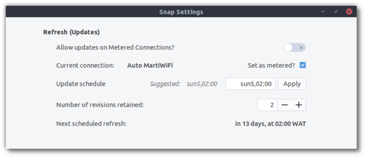
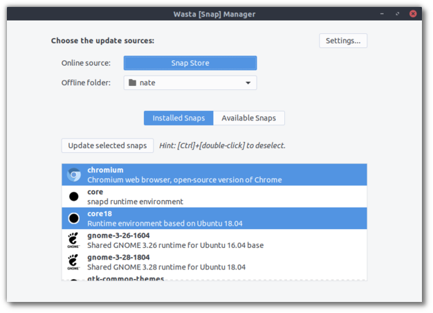
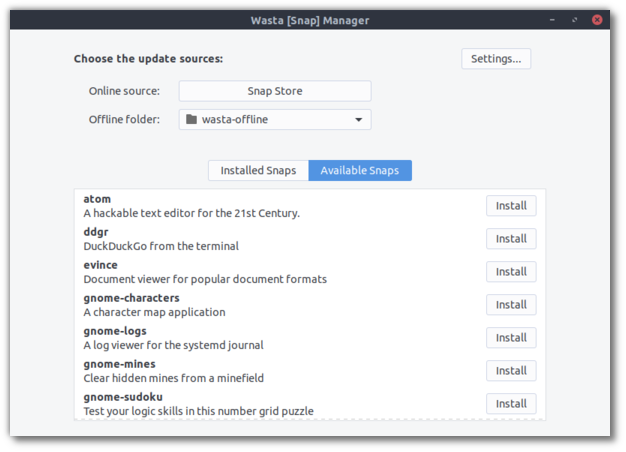

Wasta-Snap-Manager
Selectively manage snap packages offline or online
What are snap packages?
From https://snapcraft.io/docs/getting-started:
A snap is a bundle of an app and its dependencies that works without modification across many different Linux distributions. Snaps are discoverable and installable from the Snap Store, an app store with an audience of millions.
From https://snapcraft.io/docs:
Snaps are app packages for desktop, cloud and IoT that are easy to install, secure, cross-platform and dependency-free.
- snap is both the command line interface and the application package format
- snapd is the background service that manages and maintains your snaps
- snapcraft is the command and the framework used to build your own snaps
- Snap Store provides a place to upload your snaps, and for users to browse and install
Why should I care about snaps?
Wasta-Linux is based on Ubuntu, and, Canonical, the company behind Ubuntu, is the creator of the snap packaging system. Canonical is heavily invested in using and promoting snaps; for example, as of Ubuntu 20.04, Chromium browser is only available as a snap package and no longer as a deb package. Therefore, it’s wise to make efforts to accommodate snap packages if at all possible.
However, one of the main “features” of snaps, security, can also show up as a “bug” for people with limited and expensive internet connections. To ensure security (with default settings) snaps are automatically and regularly updated in the background with zero user input or knowledge. It’s great peace of mind if you’re on flat-fee monthly broadband contract, but it can lead to sudden, inexplicable mobile data depletion if you pay for your internet by the megabyte, and if you have to regularly remember to buy the next prepaid plan before your current one runs out. Because of this lack of control over updates, as well as some complications due to snap packages taking up more disk space than their deb cousins, Wasta is not currently released with the snapd system installed.
How do I manage them in Wasta?
However, you may find that snap packages can be very useful in certain circumstances and want to use them anyway. Wasta-Snap-Manager has been built to help you in this endeavor. Its primary features are:
- Easily set snap system settings to have as much control as possible over when snap updates are attempted. For example, the suggested Wasta setting is: “sun5,02:00”, which means “Automatically install updates at 2am on the last Sunday of the month,” in contrast to the default Ubuntu setting: “00:00~24:00/4”, which means “4 times every day.”
- Selectively choose which snaps to update, rather than “all or nothing”.
- Use Wasta-Offline to install or update snaps. (Wasta-Offline-Setup will add snap packages to Wasta-Offline if snapd is installed.)
Manage snap system settings

Selectively choose which snaps to update

Install or update snaps from a Wasta-Offline folder

What about flatpaks, AppImages, etc.?
There are some other “all-in-one” app+package systems out there, and I will consider (or accept help in considering…) whether or not to also incorporate them into Wasta’s ecosystem. But the initial focus has been on snap packages because of their centrality to Ubuntu’s ecosystem.